For the second day out shooting with my camera, I was super excited since I had done a lot of research and thought that I would see even more gators and wildlife than on the first day. Also, because Luiza (my girlfriend) was coming with me — just FYI, she also likes photography.
We actually checked out a few parks. The first one we went to was called Trout Creek Park, and when we got there, I started to get a bit disappointed. I only saw one small boardwalk, and the water was kind of far away. That’s when I saw the first gator, which you can see in the first picture at the bottom.
Then I kind of realized that my first day had been beginner’s luck. Me and Luiza ended up checking out two more parks but only actually went to one because the other one had a bit of a walk (lol). In the end, I was able to get some pictures — not exactly what I wanted, but I was happy that Luiza was there and that we were exploring the parks together.
PS: Love you, Lu ❤️
 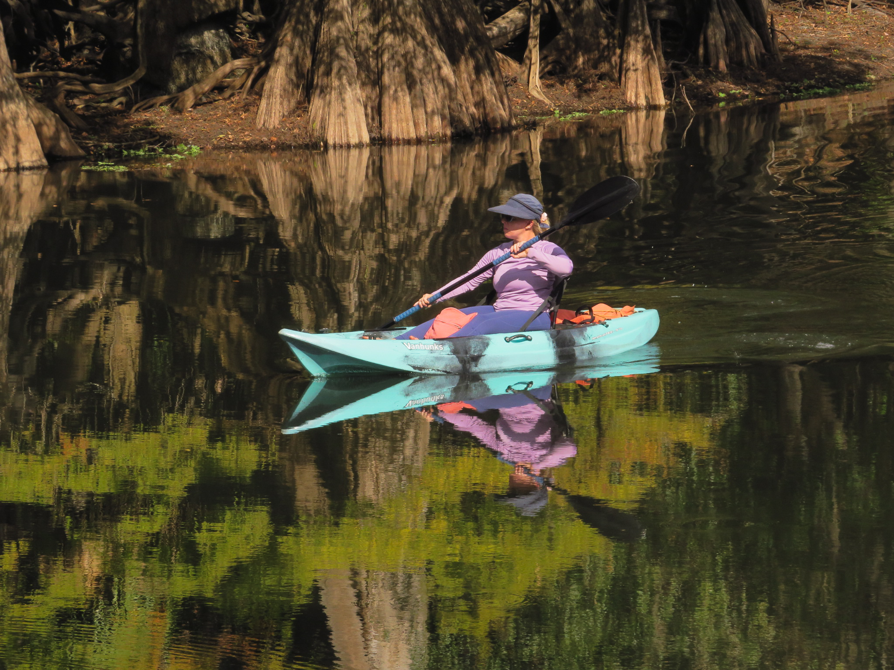
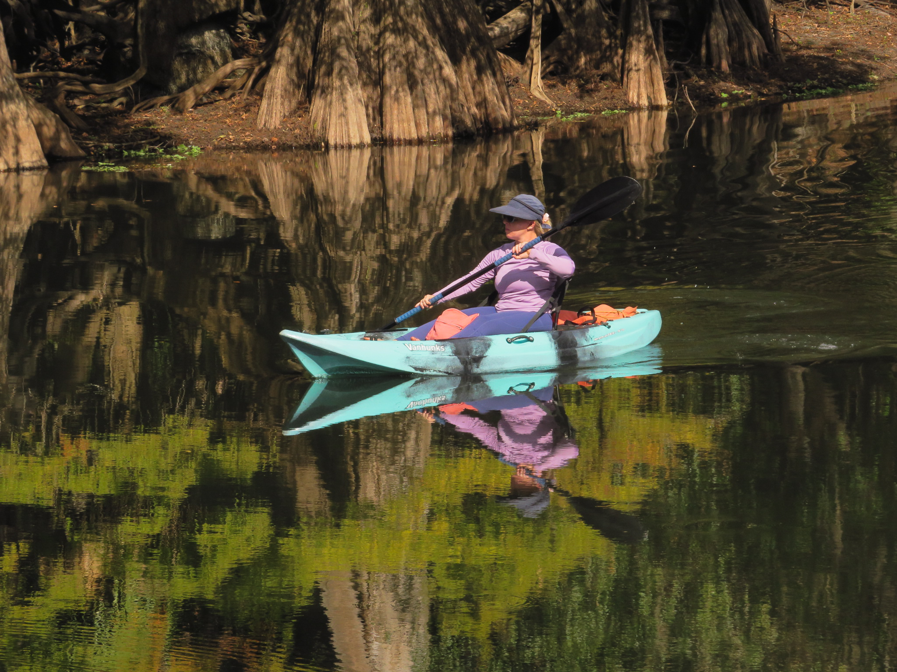

 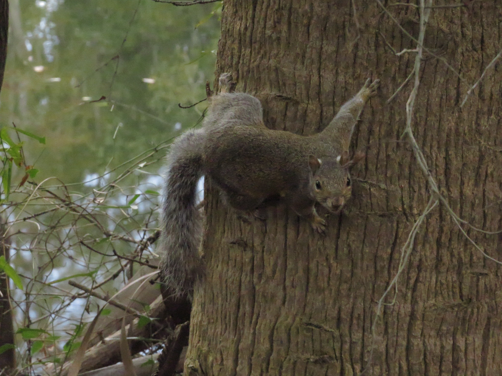
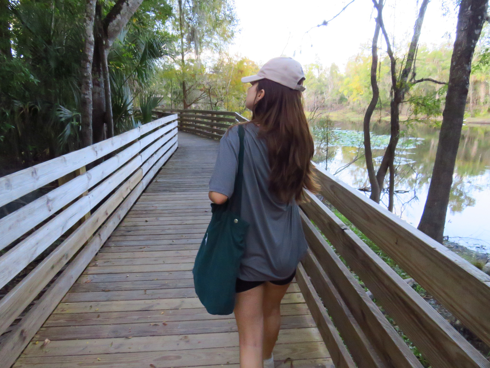
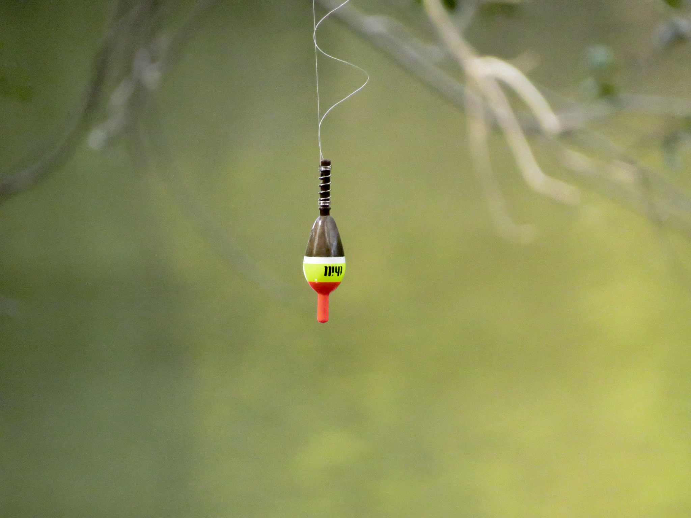
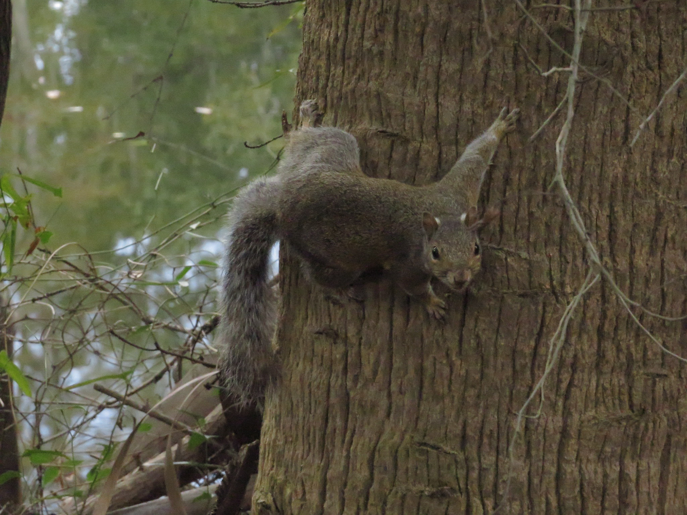
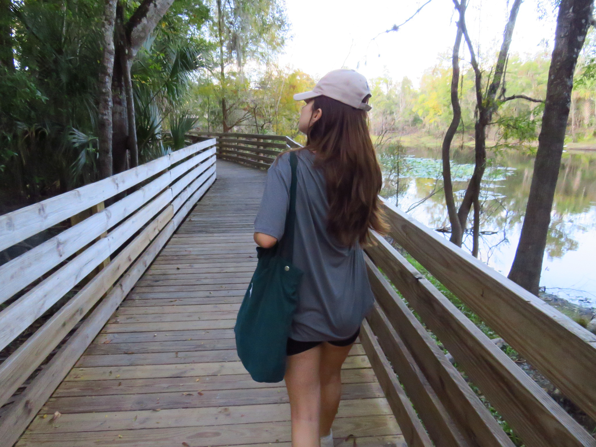
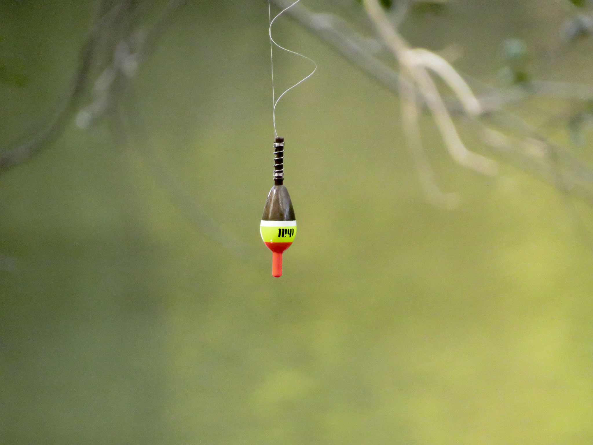
 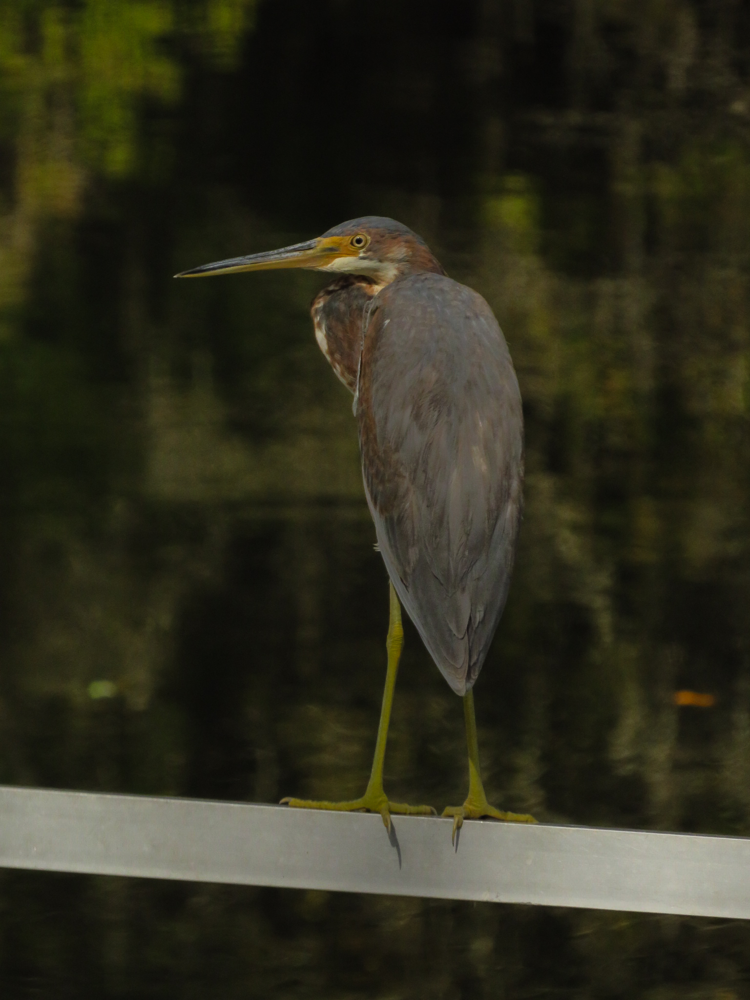
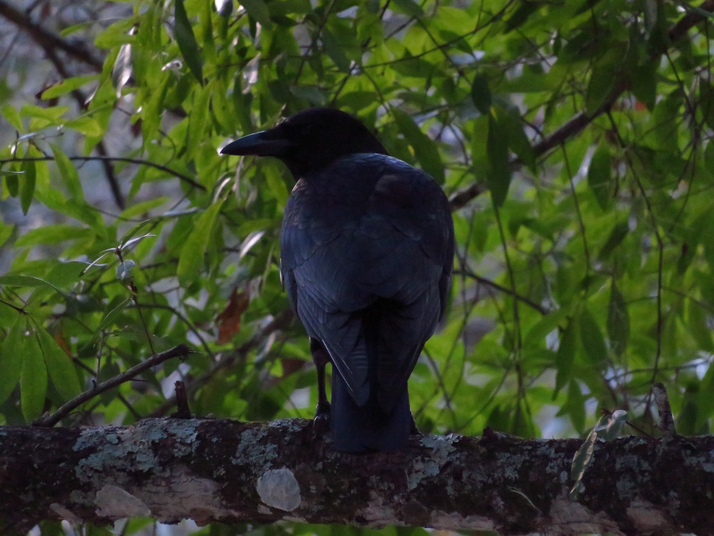
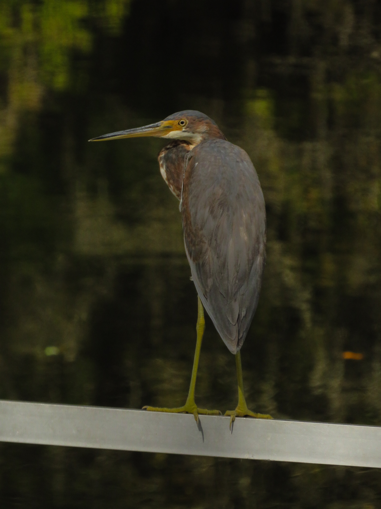
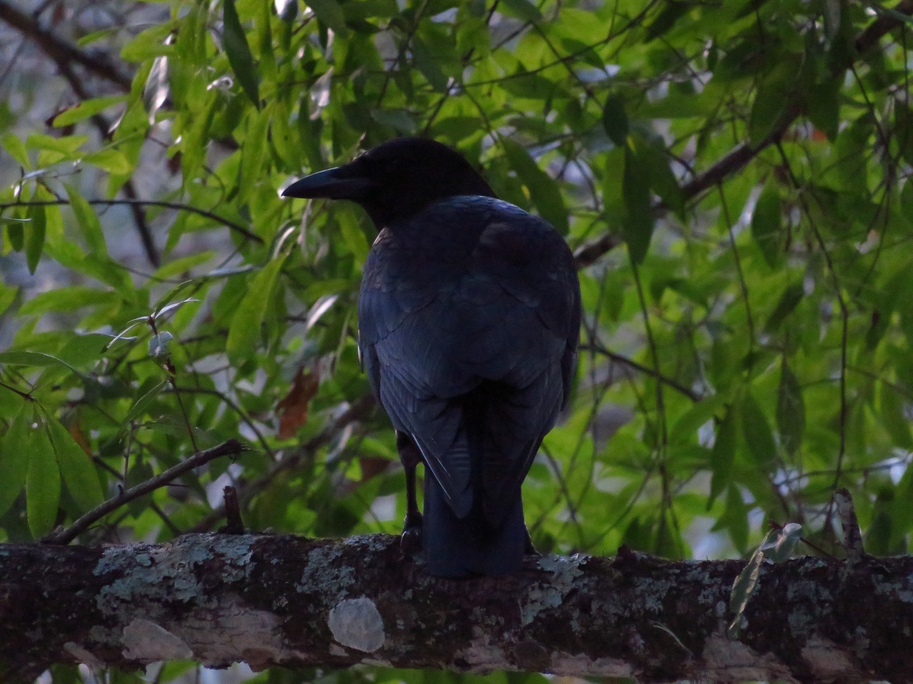